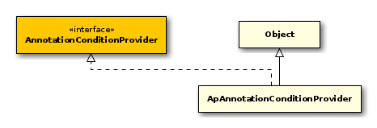

public class ApAnnotateSqlGenerator<T> extends AnnotateSqlGenerator<T> { // Public Constructors public ApAnnotateSqlGenerator();
// Public Methods public String fromClause(QueryData queryData, List<QueryNode> alternative, String indent);
public String getDocumentQuery(String toplevelCorpusName, String documentName);
public String getTextQuery(long textID);
public String selectClause(QueryData queryData, List<QueryNode> alternative, String indent);
}
- Autor
-
thomas

public class ApAnnotationConditionProvider implements AnnotationConditionProvider { // Public Constructors public ApAnnotationConditionProvider();
// Public Methods public void addAnnotationConditions(List<String> conditions, QueryNode node, int index, QueryAnnotation annotation, String table, QueryData queryData, TableAccessStrategy tas);
}
- Autor
-
thomas
